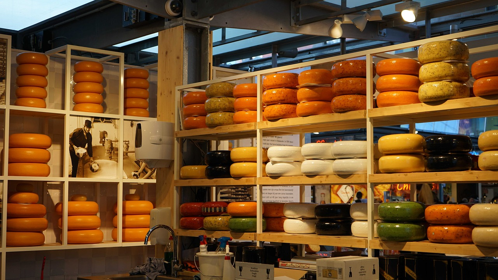
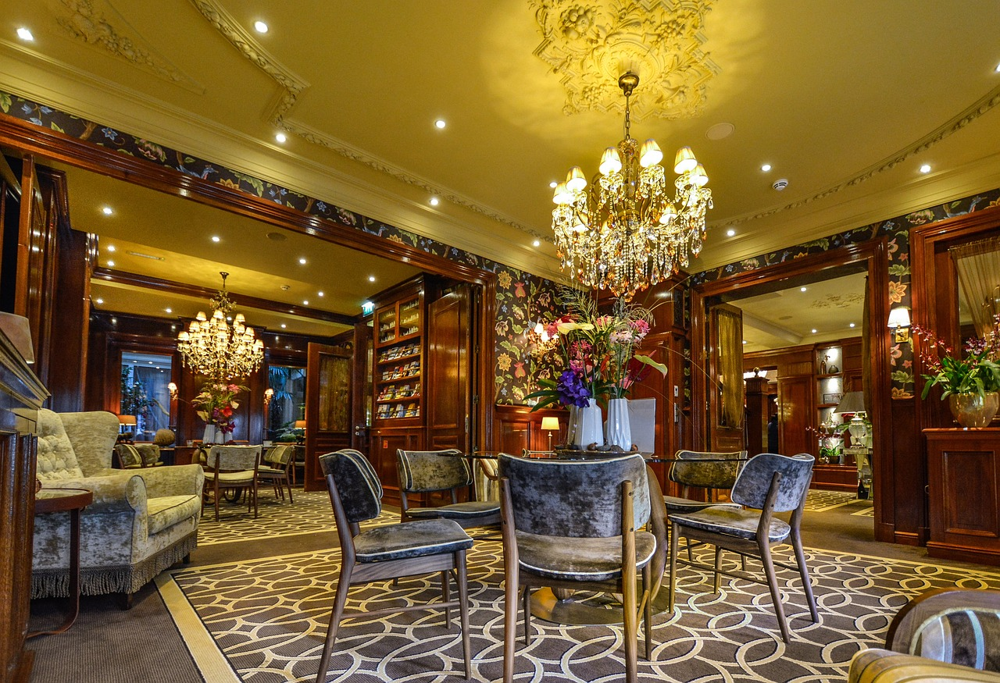

Ámsterdam

En el 3º puesto volvemos a Europa, otra ciudad que puede sorprenderte y que seguramente no esperabas ver aquí. Amsterdam es la capital de los Países Bajos, conocida por su patrimonio artístico, su elaborado sistema de canales y sus casas angostas con fachadas de dos aguas, herencias de la Edad de Oro de la ciudad durante el siglo XVII.

Que ver
Ámsterdam es conocido por su gran patrimonio artístico como los canales que hay por todos lados, entre todo destaca Komimklijk Palais en el centro, es uno de los tres palacios reales de todo el país, De Wallen (el Barrio Rojo), el museo de Van Gogh, o el mercado de las flores.
Que comer
La gastronomía de Ámsterdam está llena de platos típicos de la zona norte de Europa algunos de los mejores y más conocidos son los Bitterballen ques on unos aperitivos similares a las croquetas de España, los Pannenkoenen como los crepes franceses que se pueden comer a cualquier hora del día, por último algo por lo que son famosos los Países Bajos son los quesos existen una multitud de ellos y los hay propios de cada región, algunos son el Gouda, Edam y Alkmaar.
Alojamiento
Ámsterdam a diferencia de otros lugares es un sitio donde quedarse a dormir resulta bastante económico ya que hay hoteles como EasyStay en los que puedes pasar la noche por 30€, también los hay más caros pero esta opción es la mejor calidad precio con diferencia.